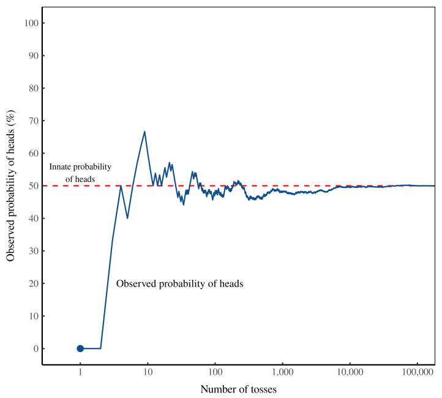
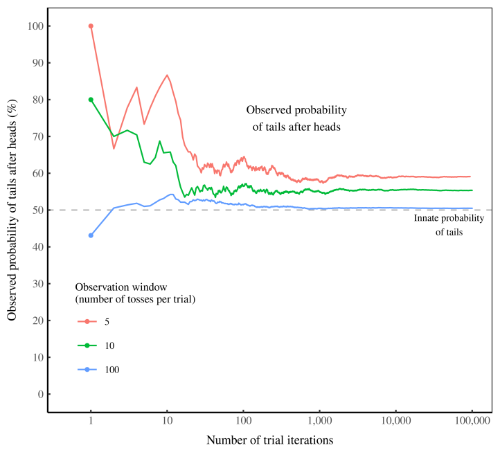

2 Probability
2.1 Intuition for Probability
Fix
The human instinct for probability. By most accounts, this instinct is terrible. And that should strike you as odd. As a rule, evolution does not produce glaring flaws. (It slowly removes them.) So if you see flaws everywhere, it’s a good sign that you’re observing an organism in a foreign environment, a place to which it is not adapted.
When it comes to probability, I argue that humans now live in a foreign environment. But it is of our own creation. Our intuition, I propose, was shaped by observing probability in short samples — the information gleaned from a single human lifetime. But with the tools of mathematics, we now see probability as what happens in the infinite long run. It’s in this foreign mathematical environment that our intuition now lives.
Unsurprisingly, when we compare our intuition to our mathematics, we find a mismatch. But that doesn’t mean our intuition is wrong. Perhaps it is just solving a different problem — one not usually posed by mathematics. Our intuition, I hypothesize, is designed to predict probability in the short run. And on that front, it may be surprisingly accurate.
As a rule, evolutionary biologists don’t look for ‘bias’ in animal behavior. That’s because they assume that organisms have evolved to fit their environment. When flaws do appear, it’s usually because the organism is in a foreign place — an environment where its adaptations have become liabilities.3
As an example, take a deer’s tendency to freeze when struck by headlights. This suicidal flaw is visible because the deer lives in a foreign environment. Deer evolved to have excellent night vision in a world without steel death machines attached to spotlights. In this world, the transition from light to dark happened slowly, so there was no need for fast pupil reflexes. Nor was there a need to flee from bright light. The evolutionary result is that when struck by light, deer freeze until their eyes adjust. It’s a perfectly good behavior … in a world without cars. In the industrial world, it’s a fatal flaw.
Back to humans and our ‘flawed’ intuition for probability. I suspect that many apparent ‘biases’ in our probability intuition stem from a change in our social environment, a change in the way we view ‘chance’.
The gambler’s fallacy
On August 18, 1913, a group of gamblers at the Monte Carlo Casino lost their shirts. It happened at a roulette table, which had racked up a conspicuous streak of blacks. As the streak grew longer, the gamblers became convinced that red was ‘due’. And yet, with each new roll they were wrong. The streak finally ended after 26 blacks in a row. By then, nearly everyone had gone broke.
These poor folks fell victim to what we now call the gambler’s fallacy — the belief that if an event happens more frequently than normal during the past, it is less likely to happen in the future. It is a ‘fallacy’ because in games like roulette, each event is ‘independent’. It doesn’t matter if a roulette ball landed on black 25 times in a row. On the next toss, the probability of landing on black remains the same (18/37 on a European wheel, or 18/38 on an American wheel).
Many gamblers know that roulette outcomes are independent events, meaning the past cannot affect the future. And yet their intuition consistently tells them the opposite. Gamblers at the Monte Carlo Casino had an overwhelming feeling that after 25 blacks, the ball had to land on red.
The mathematics tell us that this intuition is wrong. So why would evolution give us such a faulty sense of probability?
It is in ‘games of chance’ (like roulette) that flaws in our probability intuition are most apparent. Curiously, it is in these same games where the mathematics of probability are best understood. I doubt this is a coincidence.
The Monte Carlo gamblers who lost their shirts misled by their instinct. We recognize our flaws. We know that our instinct misguides us because we’ve developed formal tools for understanding probability. Importantly, these tools were forged in the very place where our intuition is faulty — by studying games of chance.
The crux of the problem. To get an accurate sense for innate probability, you need an absurdly large number of observations. And yet humans typically observe probability in short windows. This mismatch may be why our intuition appears wrong. It’s been shaped to predict probability within small samples.
The trouble is, this ‘long run’ is impossibly long.

If observers see a few hundred tosses of the coin, they will deduce the wrong probability of heads. Even after a few thousand tosses, observers will be misled. In this simulation, it takes about 100,000 tosses before the ‘observed’ probability converges (with reasonable accuracy) to the ‘innate’ probability.
Few people observe 100,000 tosses of a real coin. And that means their experience can mislead. They may conclude that a coin is ‘biased’ when it is actually not. Nassim Nicholas Taleb calls this mistake getting ‘fooled by randomness’.
For outcomes that were frequent, we could develop an accurate intuition. We are excellent, for instance, at using facial expressions to judge emotions — obviously because such judgment is a ubiquitous part of social life. But for outcomes that were rare (things like droughts and floods), patterns would be nearly impossible to see.
As a social species, our most significant interactions are with things that do have a memory (i.e. other humans). So a good rule of thumb may be to project memory onto everything with which we interact.
It could be that our probability intuition is not actually flawed, but is instead a correct interpretation of the evidence … as we see it.
Remember that our intuition has no access to the god’s eye view of ‘innate’ probability. Our intuition evolved based only on what our ancestors observed. What’s important is that humans typically observe probability in short windows. (For instance, we watch a few dozen tosses of a coin.) Interestingly, over these short windows, independent random events do have a memory. Or so it appears.
In his article ‘Aren’t we smart, fellow behavioural scientists’, Jason Collins shows you how to give a coin a ‘memory’. Just toss it 3 times and watch what follows a heads. Repeat this experiment over and over, and you’ll conclude that the coin has a memory. After a heads, the coin is more likely to return a tails.

The data shouts at us that the coin has a ‘memory’. Yet we know this is impossible. What’s happening? The coin’s apparent ‘memory’ is actually an artifact of our observation window of 3 tosses. As we lengthen this window, the coin’s memory disappears.
Here’s the take-home message. If you flip a coin a few times (and do this repeatedly), the evidence will suggest that the coin has a ‘memory’. Increase your observation window, though, and the ‘memory’ will disappear.
When the sample size is small, assuming the coin has a memory is a good way to make predictions.
So what is the evolutionary context of our probability intuition? It is random events viewed through a limited window — the length of a human life. In this context, it’s not clear that our probability intuition is actually biased.
Yes, we tend to project ‘memory’ onto random events that are actually independent. And yet when the sample size is small, projecting memory on these events is actually a good way to make predictions.
Fix (2021) Is Human Probability Intuition Actually ‘Biased’?
2.2 Pandemic Risk Management
Non-Ergodic
Paranoia or Nothing
Taleb and collegues have som very interesting methodological remarks in the early stages of the COVID-19 outbreak:
Clearly, we are dealing with an extreme fat-tailed process owing to an increased connectivity, which increases the spreading in a nonlinear way. Fat tailed processes have special attributes, making conventional risk-management approaches inadequate
The general (non-naive) precautionary principle delin- eates conditions where actions must be taken to reduce risk of ruin, and traditional cost-benefit analyses must not be used. These are ruin problems where, over time, exposure to tail events leads to a certain eventual extinction. While there is a very high probability for humanity surviving a single such event, over time, there is eventually zero probability of surviving repeated exposures to such events. While repeated risks can be taken by individuals with a limited life expectancy, ruin exposures must never be taken at the systemic and collective level. In technical terms, the precautionary principle applies when traditional statistical averages are invalid because risks are not ergodic.
Historically based estimates of spreading rates for pandemics in general, and for the current one in particular, underestimate the rate of spread because of the rapid increases in transportation connectivity over recent years. This means that expectations of the extent of harm are under- estimates both because events are inherently fat tailed, and because the tail is becoming fatter as connectivity increases
Estimates of the virus’s reproductive ratio \(R\_{0}\) —the number of cases one case generates on average over the course of its infectious period in an otherwise uninfected population—are biased downwards. This property comes from fat-tailedness due to individual ‘superspreader’ events. Simply,\(R\_{0}\) is estimated from an average which takes longer to converge as it is itself a fat-tailed variable.